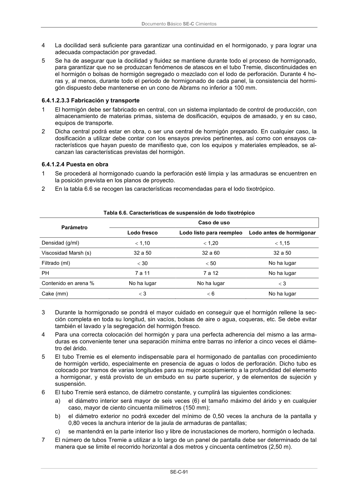

DB-SE-C · 6.4.1.2.4 Puesta en obra · versión 2019-12-20
SHA256: a71133f4b0dca253e45ea3071c70f2a512354bcc5cd841bf89b1a502f567ac5e · página física 96 de 165 · métodos de encabezado
solo si están cotejados.
Formatos: Markdown · JSON de bloques · PDF p. 96 · imagen PNG
Documento Básico SE-C Cimientos SE-C-91 4 La docilidad será suficiente para garantizar una continuidad en el hormigonado, y para lograr una adecuada compactación por gravedad. 5 Se ha de asegurar que la docilidad y fluidez se mantiene durante todo el proceso de hormigonado, para garantizar que no se produzcan fenómenos de atascos en el tubo Tremie, discontinuidades en el hormigón o bolsas de hormigón segregado o mezclado con el lodo de perforación. Durante 4 ho- ras y, al menos, durante todo el periodo de hormigonado de cada panel, la consistencia del hormi- gón dispuesto debe mantenerse en un cono de Abrams no inferior a 100 mm. 6.4.1.2.3.3 Fabricación y transporte 1 El hormigón debe ser fabricado en central, con un sistema implantado de control de producción, con almacenamiento de materias primas, sistema de dosificación, equipos de amasado, y en su caso, equipos de transporte. 2 Dicha central podrá estar en obra, o ser una central de hormigón preparado. En cualquier caso, la dosificación a utilizar debe contar con los ensayos previos pertinentes, así como con ensayos ca- racterísticos que hayan puesto de manifiesto que, con los equipos y materiales empleados, se al- canzan las características previstas del hormigón. 6.4.1.2.4 Puesta en obra 1 Se procederá al hormigonado cuando la perforación esté limpia y las armaduras se encuentren en la posición prevista en los planos de proyecto. 2 En la tabla 6.6 se recogen las características recomendadas para el lodo tixotrópico. Tabla 6.6. Características de suspensión de lodo tixotrópico Parámetro Caso de uso Lodo fresco Lodo listo para reempleo Lodo antes de hormigonar Densidad (g/ml) 1,10 1,20 1,15 Viscosidad Marsh (s) 32 a 50 32 a 60 32 a 50 Filtrado (ml) 30 50 No ha lugar PH 7 a 11 7 a 12 No ha lugar Contenido en arena % No ha lugar No ha lugar 3 Cake (mm) 3 6 No ha lugar 3 Durante la hormigonado se pondrá el mayor cuidado en conseguir que el hormigón rellene la sec- ción completa en toda su longitud, sin vacíos, bolsas de aire o agua, coqueras, etc. Se debe evitar también el lavado y la segregación del hormigón fresco. 4 Para una correcta colocación del hormigón y para una perfecta adherencia del mismo a las arma- duras es conveniente tener una separación mínima entre barras no inferior a cinco veces el diáme- tro del árido. 5 El tubo Tremie es el elemento indispensable para el hormigonado de pantallas con procedimiento de hormigón vertido, especialmente en presencia de aguas o lodos de perforación. Dicho tubo es colocado por tramos de varias longitudes para su mejor acoplamiento a la profundidad del elemento a hormigonar, y está provisto de un embudo en su parte superior, y de elementos de sujeción y suspensión. 6 El tubo Tremie será estanco, de diámetro constante, y cumplirá las siguientes condiciones: a) el diámetro interior será mayor de seis veces (6) el tamaño máximo del árido y en cualquier caso, mayor de ciento cincuenta milímetros (150 mm); b) el diámetro exterior no podrá exceder del mínimo de 0,50 veces la anchura de la pantalla y 0,80 veces la anchura interior de la jaula de armaduras de pantallas; c) se mantendrá en la parte interior liso y libre de incrustaciones de mortero, hormigón o lechada. 7 El número de tubos Tremie a utilizar a lo largo de un panel de pantalla debe ser determinado de tal manera que se limite el recorrido horizontal a dos metros y cincuenta centímetros (2,50 m).
